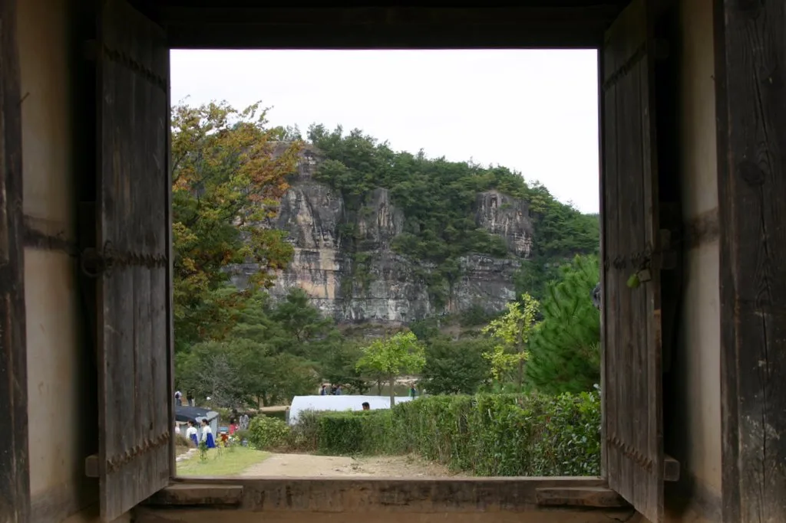
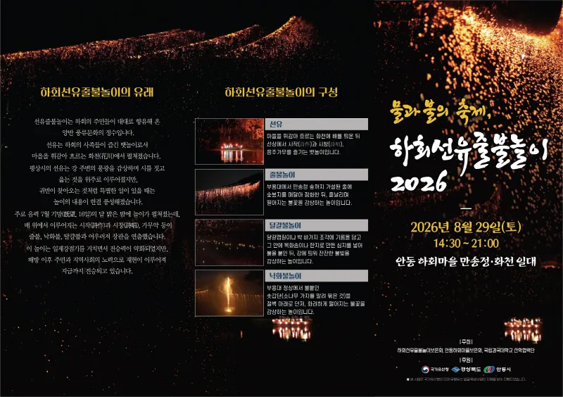
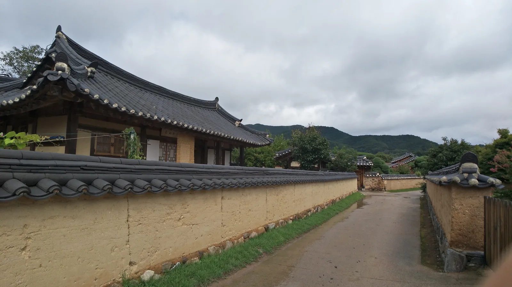
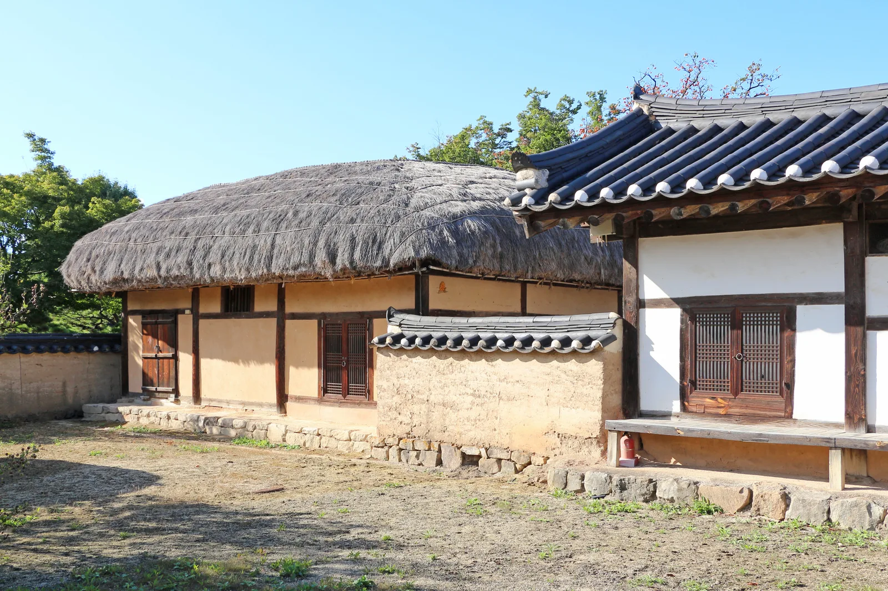
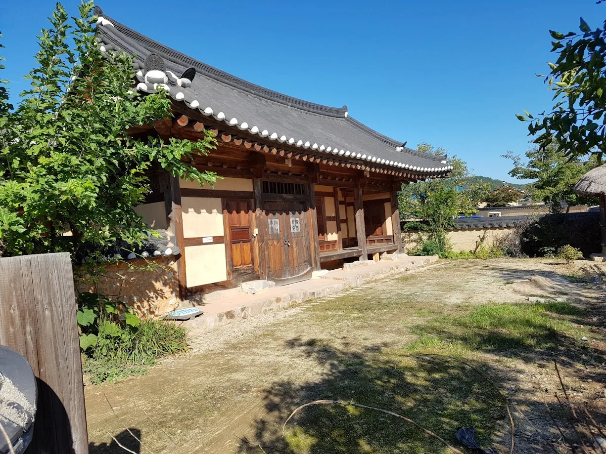

▲ 부용대에서 내려다본 하회마을과 낙동강. 하회선유줄불놀이는 이 강줄기 위에서 만송정과 부용대 사이를 오가며 재현된다
1. '물과 불의 축제', 9월 29일 만송정에서 열린다
세계유산 안동 하회마을에서 2026년 9월 29일(화) 오후 2시 30분부터 '하회선유줄불놀이 2026'이 만송정 일대에서 열린다. 하회선유줄불놀이보존회와 안동하회마을보존회, 국립경국대학교 산학협력단이 공동 주최하고 국가유산청과 경상북도, 안동시가 후원하는 행사로, 국가유산청의 '미래 무형유산 발굴·육성 사업'의 하나로 진행된다. '물과 불의 향연'이라는 부제 그대로, 낙동강이라는 물 위에 불빛이 흐르는 광경이 이 행사의 핵심이다.

▲ 하회선유줄불놀이 2026 공식 포스터. 9월 29일 오후 2시 30분부터 하회마을 만송정 일대에서 재현된다 ⓒ 안동시
2. 450년을 이어온 선비들의 뱃놀이 — 줄불놀이의 유래
▲ 부용대에서 내려다본 하회마을과 낙동강. 예로부터 선비들은 이 강 위에서 뱃놀이를 즐기며 풍류를 나눴다 ⓒ Wikimedia Commons (CC BY 3.0)
예로부터 음력 7월 기망(旣望, 보름 다음 날) 무렵이면 하회의 선비들은 부용대 아래 화천(花川, 낙동강이 하회마을을 휘감아 도는 구간)에서 뱃놀이를 하며 풍류를 즐겼다. 이때 만송정 소나무 숲과 맞은편 부용대 절벽 사이에는 숯가루를 넣은 봉지를 매단 긴 줄을 걸어 불을 붙였는데, 이것이 '줄불'이다. 여기에 강물 위로 달걀 모양의 불덩이를 띄우는 '달걀불', 부용대 절벽 위에서 솔가지 등에 불을 붙여 강으로 떨어뜨리는 '낙화불'이 함께 어우러지며 '선유(뱃놀이)'의 흥취를 더했다. 이렇게 약 450년 가까이 이어져 온 전통이 오늘날에도 매년 재현되고 있는 것이다.
3. 탈춤부터 국악까지 — 함께 즐기는 부대 프로그램
| 구분 | 내용 |
|---|---|
| 날짜·시간 | 2026년 9월 29일(화) 14:30~ |
| 장소 | 세계유산 안동 하회마을 만송정 일대 |
| 전통연희 | 솟대쟁이놀이, 장승 퍼포먼스 |
| 공연 | 하회별신굿탈놀이, "풍류지음"(소리꾼 이봉근·밴드 적벽), "풍류동락"(국악·한국무용) |
| 체험 | 숯봉지 만들기, 소원지 쓰기, 달걀불 바가지에 소원 쓰기 |
| 주최 | 하회선유줄불놀이보존회, 안동하회마을보존회, 국립경국대 산학협력단 |
| 후원 | 국가유산청, 경상북도, 안동시 |
본 행사인 줄불놀이 재현에 앞서 솟대쟁이놀이와 장승 퍼포먼스 같은 전통연희가 먼저 흥을 돋우고, 800년 역사를 지닌 하회별신굿탈놀이 공연도 함께 펼쳐진다. 소리꾼 이봉근과 밴드 적벽이 함께하는 "풍류지음", 국악과 한국무용이 어우러지는 "풍류동락" 공연도 예정돼 있어, 해가 완전히 지고 줄불에 불이 오르기 전까지도 볼거리가 끊이지 않는다. 관람객이 직접 참여할 수 있는 숯봉지 만들기, 소원지 쓰기, 달걀불 바가지에 소원 적기 체험도 마련돼 있어, 아이와 함께 방문해도 지루할 틈이 적다.

▲ 소나무 숲이 우거진 만송정 인근. 줄불놀이는 이 소나무 숲과 강 건너 부용대 절벽 사이를 오가며 재현된다 ⓒ Wikimedia Commons (CC0)
4. 가장 잘 보이는 자리 — 만송정과 부용대

▲ 하회마을 전통 돌담길. 만송정으로 향하는 길목에서 마을 고유의 풍경을 함께 즐길 수 있다 ⓒ Wikimedia Commons
줄불놀이는 만송정 강변과 맞은편 부용대, 두 지점을 오가며 펼쳐지는 행사인 만큼 관람 위치에 따라 보이는 풍경이 다르다. 만송정 강변에서는 줄불이 타오르는 모습과 강 위에 띄운 달걀불을 가까이서 볼 수 있고, 높이 80m의 절벽인 부용대에 오르면 하회마을 전체와 강줄기, 그리고 절벽에서 떨어지는 낙화불까지 한눈에 내려다볼 수 있다. 해가 완전히 진 뒤에는 인파가 몰리므로, 좋은 자리를 잡으려면 행사 시작 시간보다 여유 있게 도착하는 편이 좋다. 관람에 별도의 예매가 필요한지는 회차나 시기에 따라 달라질 수 있으므로, 방문 전 안동시 문화관광 홈페이지나 하회마을 공식 채널에서 최신 공지를 확인하는 것이 안전하다.
📍 참고로 알아두면 좋은 것
하회선유줄불놀이는 이번 9월 29일 특별 재현 외에도, 5월부터 11월까지 매월 1회씩 소규모 상설 시연이 별도로 운영된다. 또한 9월 19일과 10월 4일에는 줄불놀이와 안동의 미식을 결합한 '하회야연' 프로그램도 하회마을 낙동강변 일원에서 열릴 예정이어서, 일정이 맞지 않는다면 다른 회차를 노려볼 수도 있다.
5. 하회마을 찾아가는 법

▲ 초가지붕을 얹은 하회마을 전통 가옥. 줄불놀이 관람 전후로 마을 고택들을 함께 둘러볼 수 있다 ⓒ Wikimedia Commons
하회마을은 안동시외버스터미널에서 하회마을행 버스로 이동할 수 있으며, 마을 입구 주차장에서 셔틀버스나 도보로 마을 안쪽 만송정까지 진입하는 구조다. 마을 진입로와 주차장 이용에 관한 상세 정보는 카프리즘이 별도로 다룬 하회마을 방문 가이드에서 더 자세히 확인할 수 있다. 이번 글에서는 줄불놀이 행사 자체에 집중해 정리했다.

▲ 기와지붕의 하회마을 양반 가옥. 줄불놀이가 열리는 만송정까지 가는 길에 자연스럽게 지나치게 되는 풍경이다 ⓒ Wikimedia Commons
✅ 하회선유줄불놀이 2026, 이것만은 확인하세요
· 2026년 9월 29일(화) 오후 2시 30분부터, 세계유산 하회마을 만송정 일대
· 약 450년 전통의 줄불·달걀불·낙화불 재현, 하회별신굿탈놀이 등 부대 공연 다수
· 숯봉지 만들기·소원지 쓰기 등 체험 프로그램도 함께 운영
· 관람 명당은 만송정 강변(가까이서 관람) 또는 부용대(전경 조망)
· 5~11월 매월 1회 소규모 상설 시연도 별도 운영, 예매·최신 공지는 방문 전 재확인 필요
6. 정리
하회선유줄불놀이 2026은 추석 연휴가 아닌 9월 29일 열리는 만큼, 일정을 착각하지 않는 것이 가장 중요하다. 450년 가까이 이어온 선비들의 뱃놀이 전통이 오늘도 낙동강 위에서 재현되는 만큼, 만송정과 부용대 중 원하는 관람 지점을 미리 정하고 여유 있게 도착하는 것이 이번 행사를 제대로 즐기는 방법이다.